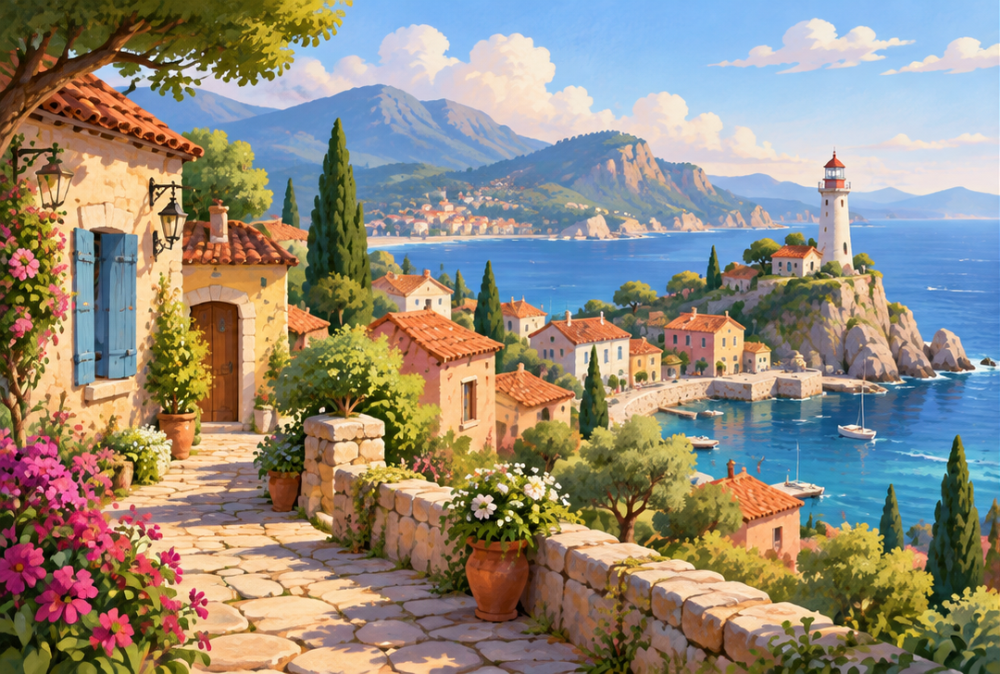
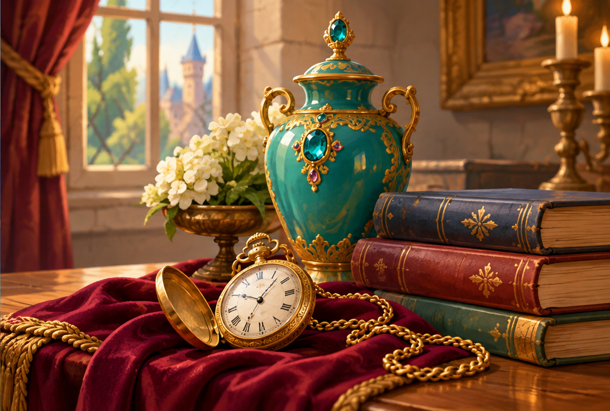

A · Dış dünya
Sahil kasabası, deniz ve deniz feneri.
Her iki örnek de orta kontrastlı, sakin ve büyük şekillerle kuruldu. Jigsaw çizgileri oyun tarafından eklenecek.

Sahil kasabası, deniz ve deniz feneri.

Teal mücevherli vazo, cep saati, kadife ve kitaplar.